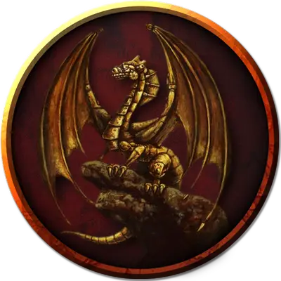

Заводной дракон
Clockwork Dragon
Средний Конструкт, нейтральный

Класс Доспеха 16 (природный доспех)
Хиты 22 (4к8 + 4)
Скорость 30 футов, летая 60 футов
| мод | спас | ||
|---|---|---|---|
| СИЛ | 14 | +2 | +2 |
| ЛОВ | 10 | +0 | +0 |
| ТЕЛ | 12 | +1 | +1 |
| мод | спас | ||
|---|---|---|---|
| ИНТ | 10 | +0 | +0 |
| МДР | 11 | +0 | +0 |
| ХАР | 13 | +1 | +1 |
Навыки Акробатика +2, Восприятие +4
Иммунитет к урону психическая энергия, яд
Иммунитет к состояниям глухота, испуг, истощение, окаменение, ослепление, отравление, очарование, паралич
Чувства слепое зрение 60 футов, тёмное зрение 60 футов, пассивное Восприятие 14
Языки Общий, Драконий
Опасность 1 (200 опыта)
Бонус мастерства +2
Особенности
Обманчивая внешность. Пока заводной дракон остается без движения, он неотличим от металлической статуи.
Действия
Укус. . Рукопашная атака оружием: +4 к попаданию, досягаемость 5 футов, одна цель. Попадание: 7 (1к10 + 2) колющего урона.
Огненное дыхание. Дракон выдыхает огонь 15-футовым конусом. Все существа в этой области должны совершить спасбросок Ловкости Сл 11, получая урон огнём 14 (4к6) при провале, или половину этого урона при успехе.
Описание
Эти замысловато обработанные конструкты, как правило, сделаны так, чтобы отражать формы металлических драконов. Покрытые латунью, бронзой, медью или искусственным золотом и серебром, они на первый взгляд часто принимаются за прекрасные статуи драконов. Заводной дракон - грозный страж или защитник, с его развитым интеллектом, позволяющим ему программироваться с широким спектром приказов, а также быть способным к совершенно независимым реакциям на потенциальные угрозы.
Хотя у большинства заводных драконов есть оружие дыхания, которое наносит урон огнем, некоторые могут быть сконструированы так, чтобы наносить урон кислотой, холодом или электричеством, в зависимости от желаний их создателей.